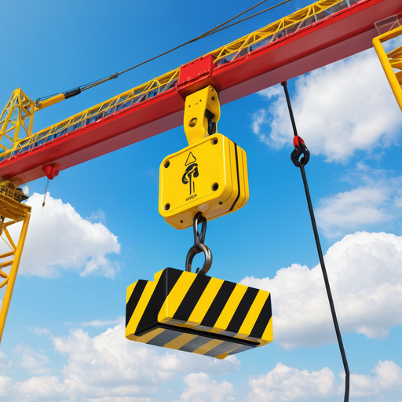
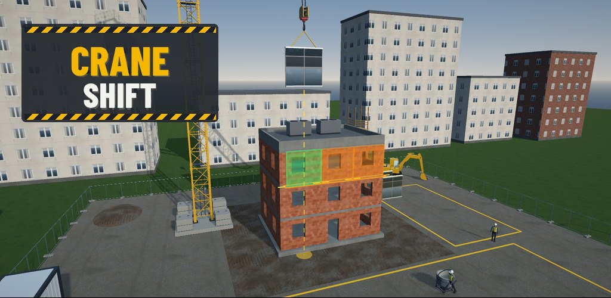
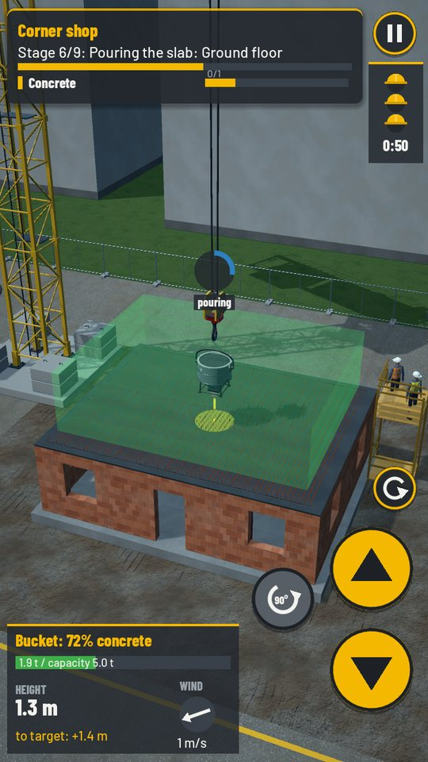
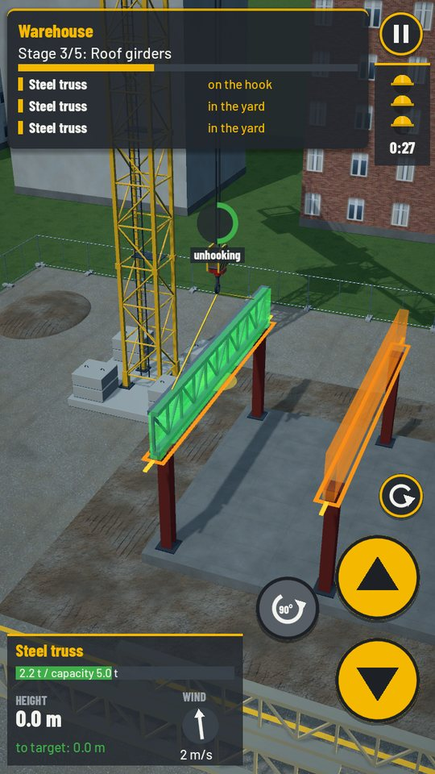
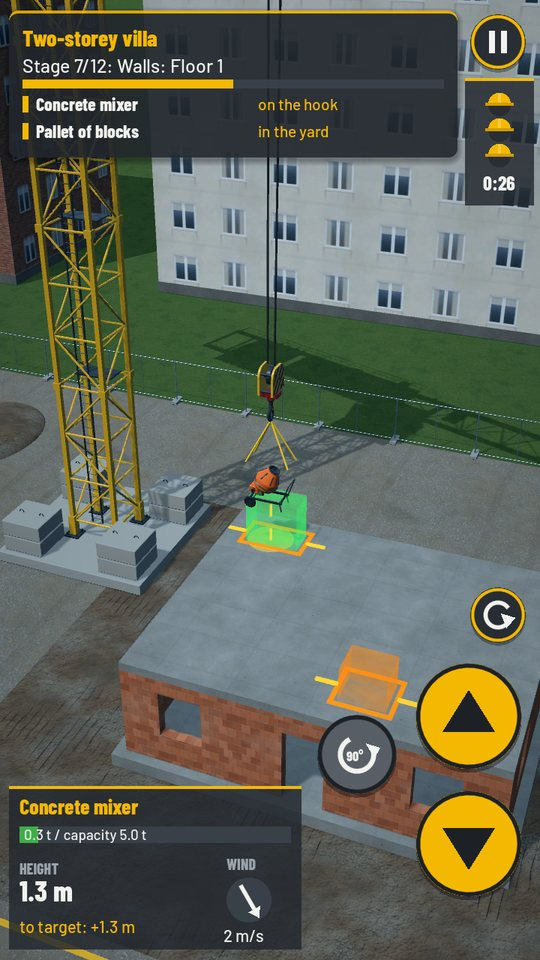
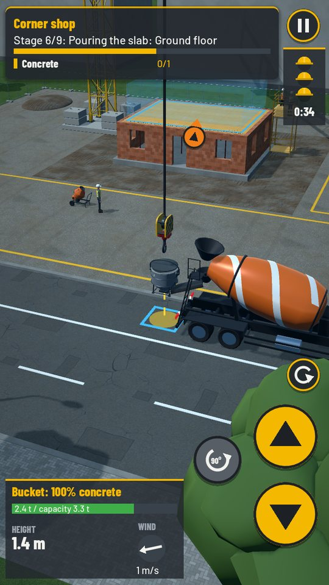
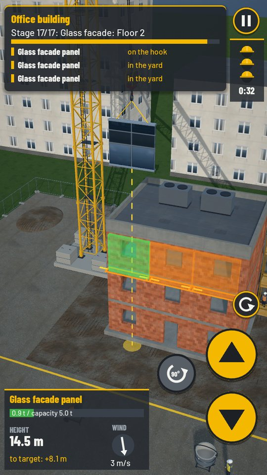
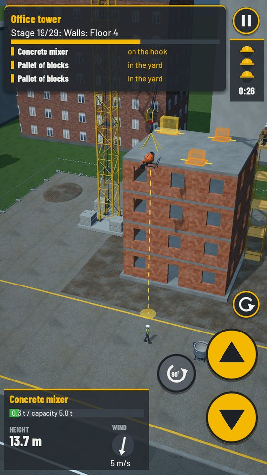
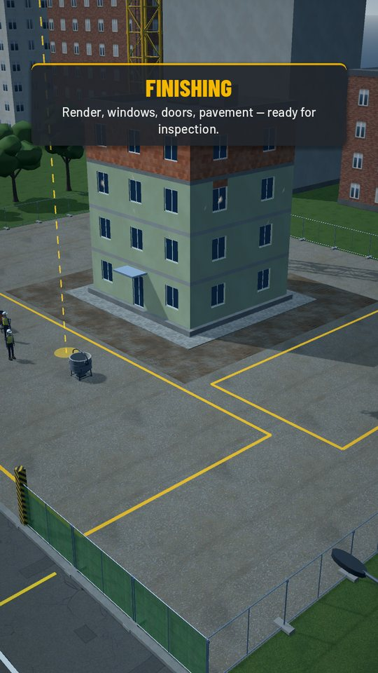
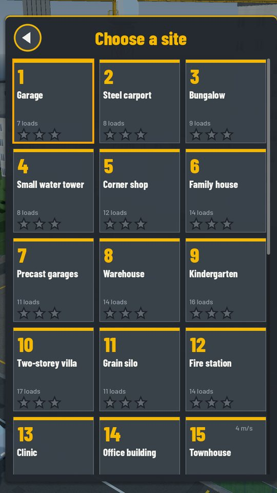

Tower Crane Sim · build 30 sites, from a garage to a high-rise
Take the controls of a tower crane and raise 30 buildings, one lift at a time. You move the materials and building elements; the crew on site turns them into real buildings, from a small garage to a seven-storey tower.
Get it on Google PlayFree · Android









The game is free and shows a full-screen ad only after a finished site — never while you work the crane. A one-time purchase unlocks all sites at once and removes all ads. Without it, the sites unlock one after another for free.
No account needed. Progress is saved on your device after every stage, and the game plays offline; the internet is used only for ads.
Languages: English, Polish, German, French, Spanish, Portuguese (Brazil), Italian and Turkish.